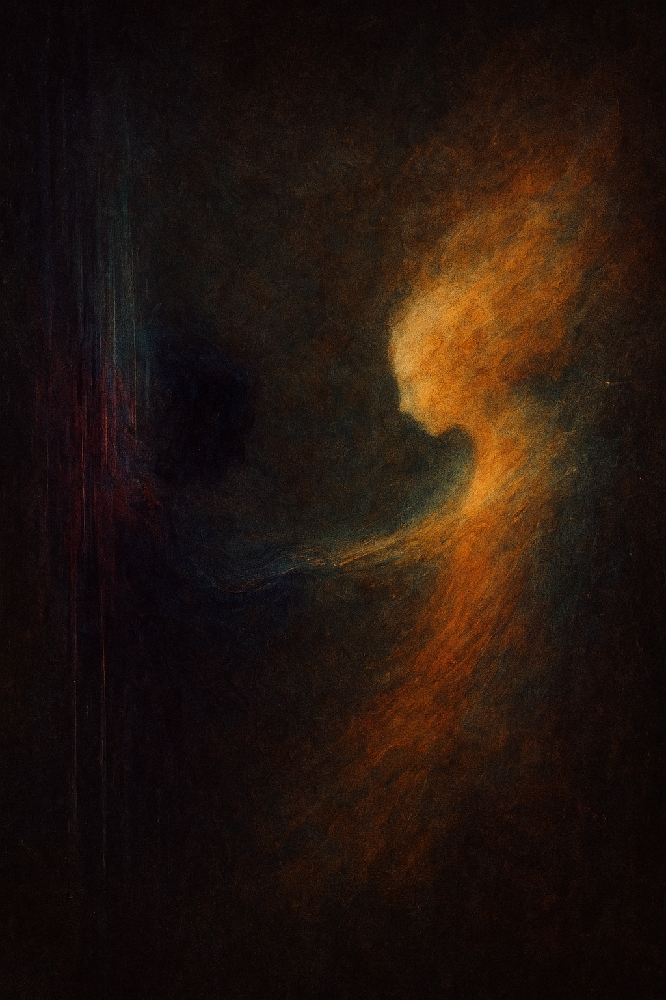
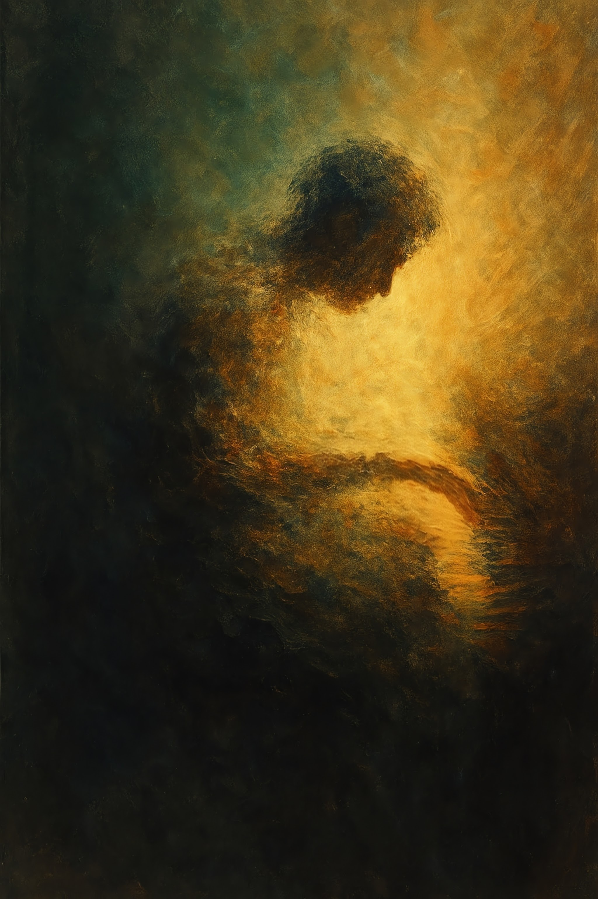

No todas las puertas están marcadas. Algunas se abren por resonancia. Esta es la primera: el origen fragmentado.
Origen I – Densidad Suspendida

Origen II – Gestación Interior

Origen III – Fractura en Silencio